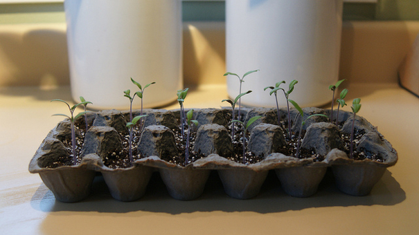
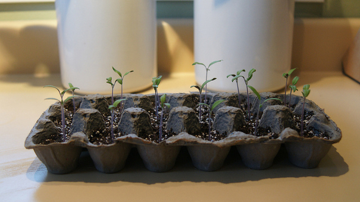

3R Initiatives
REDUCE

A solar panel is a photovoltaic panel designed to absorb the sun ray to produce electricity or heating Each solar panel has approximately sixty little squares. These squares are individual solar cells, which are linked together by wires. nside each individual solar cell is where the electricity is made; electricity is then carried by the wires to a junction box where the panel is hooked into a larger array. The amount of power a solar panel makes is based on the wattage of the solar panel.
The higher the wattage of a solar panel the more electricity it produces because it has access to more solar irradiation. The amount of electricity solar panels produce also depends on average sunlight over the course of a year. To know this you need to find your place on the globe to see if your area is more cloudy, and therefore less available energy from the sun to convert into electricity.
Malaysia, for example, is a great place to produce solar energy. That is why the solar industry in Malaysia is expanding with several solar power companies and solar farms.
...The average house uses about 900 kWh per month. This is a lot and you can really save a big amount of money by using solar power. So how do you calculate how many solar panels you need? Let’s take 900 kWh and divide by the amount of kWH one solar panel produces, that is around 30 kWh monthly. You will need 30 panels to produce 250 watts per panel to produce 7,500 kW. Of course, before you install your solar panels, it’s recommended to consult a solar company. The expert will tell you how your solar power system should be depending on how much devices you use and your lifestyle,
 

REUSE
2 Ways to Reuse Common Household Items
If you’re anything like me, you’re throwing out too much with the trash. Even though I recycle, I often think that I could surely be doing more to cut down on waste. With a little creative thinking, I’ve come up with a list of 10 household items I could be saving rather than tossing out. Here they are, along with some of the ways they can be reused
1. Dish Soap Bottles
Use an old, thoroughly cleaned dish soap bottle (or any squeeze bottle) to dole out a perfect amount of pancake batter onto a hot griddle. You can also use a squeeze bottle as a convenient way to fill an iron with water or water out-of-the-way plants.
2. Egg Cartons
Used egg cartons (preferably well-cleaned Styrofoam ones) are excellent for freezing individual portions of all kinds of things — cookie dough batter, meatballs, homemade herb-butter patties. You could also use the cartons as convenient Jell-O molds for fun treats. They're also a great way to start seedlings for your garden. And if you have enough, use the cartons to store golf balls or organize change, which is especially convenient for garage and bake sales.


RECYCLE
Recycling is the process of collecting and processing materials that would otherwise be thrown away as trash and turning them into new products. Recycling can benefit your community and the environment.